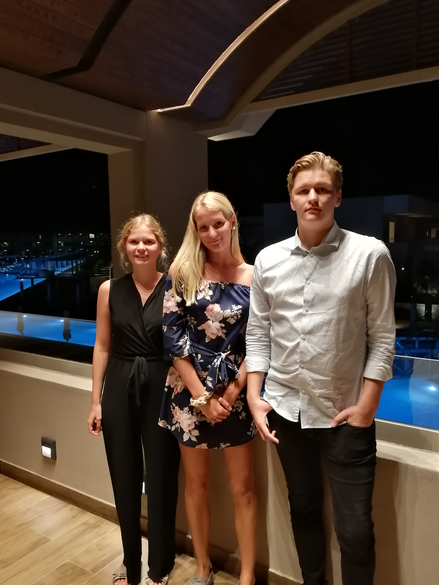

 Jennie heter jag och är 44 år. Jag bor tillsammans med mina tre, snart vuxna, barn i en lägenhet i Växjö. Vi blev stadsbor i november 2017 och innan dess bodde vi i hus i ett litet samhälle några mil utanför Växjö. Sedan drygt fem år tillbaka är jag särbo med Urban som bor i Oskarshamn. Jag har de senaste 10 åren varit statligt anställd och jobbat mycket med utveckling av handläggarstöd. Nyligen fick jag chansen att börja utbilda mig inom programmering vilket jag tycker är väldigt skoj. Ska bara försöka få kläm på hur det går till också. Som ni kanske redan förstått så tycker jag mycket om blommor. Vet inte riktigt varför det är så men det har troligen gått i arv då min farfar var väldigt trädgårdsintresserad. Jag har flera släktingar på min pappas sida som jobbar med växter och markskötsel. Dock roar inte just trädgårdsarbete mig utan jag vill enbart titta på de vackra blommorna.